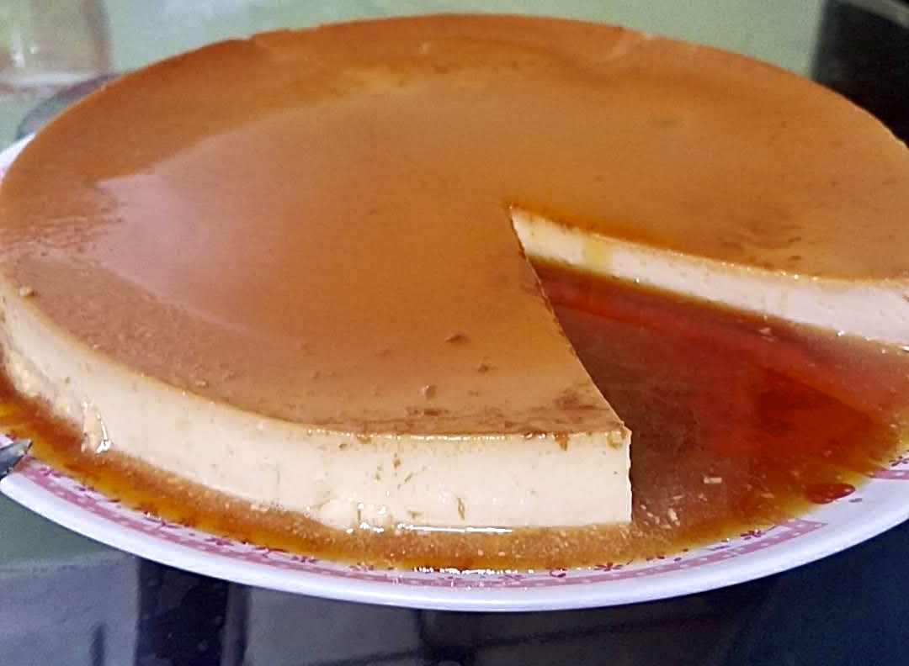

Flan

Ingredients
- 1 cup powdered Monk Fruit sweetner
- 6 eggs
- 1/4 cup water
- 1 tsp. vanilla extract
- Pinch of salt
- 2 tsp. vanilla extract
- 2 cups heavy cream
Nutrition Information
| Amount per serving |
1 slice |
| Calories |
331 |
| Total Fat |
33g |
| Total Carbohydrates |
3g |
| Fiber |
0.1g |
| Sugar |
3g |
| Protein |
5g |
Instructions
- Pre-heat oven to 350°F.
- Combine 1/2 cup of monk fruit and 1/4 cup of water in a saucepan over low heat.
- Heat until it is dissolved.
- Increase heat until syrup boils, then simmer for about 20 minutes until syrup turns gold.
- Quickly pour syrup into around 8" x 8" baking pan and tilt until syrup is evenly spread.
- Whisk egg yolks together.
- In another saucepan, heat the heavy cream, remainder of the monk fruit sweetner and salt over medium heat.
- Remove from heat and whisk in the vanilla extract once bubble start to form.
- Slowly combine mixture with the egg yolks while constantly whisking.
- Using a finw sieve, pour custard into the pan.
- Place the pan into a larger pan.
- Slowly pour water into the larger pan without pouring it into the 8" x 8" pan.
- Bake for about 25mins until flan is almost set.
- Remove from oven and let cool for about 2hrs.
- Refrigerate overnight.